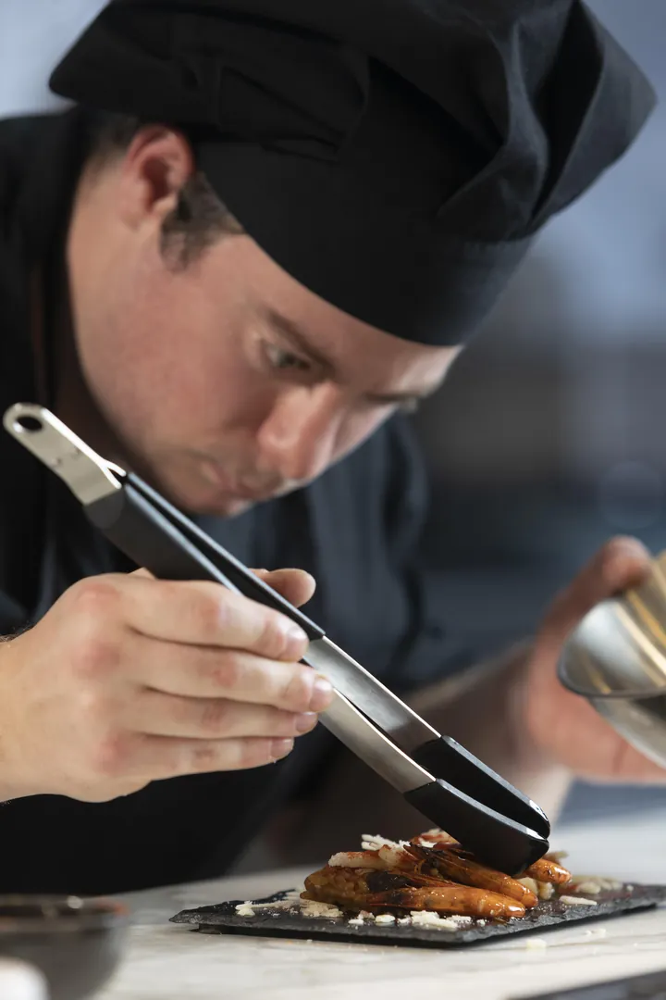
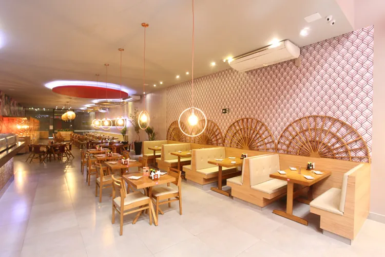
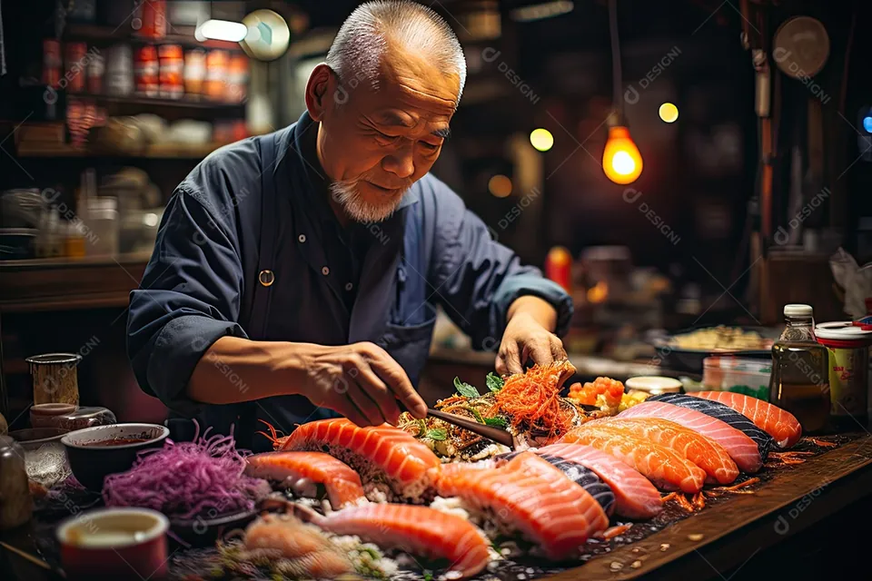

Uma história feita de arroz, peixe e paciência
Do primeiro balcão numa esquina de São Paulo até as mesas de todo o Brasil.
O início
Nosso restaurante foi fundado em 1990 por um chef japonês apaixonado pela culinária do seu país. O objetivo era trazer a autêntica experiência gastronômica do Japão para o Brasil, e as portas se abriram em uma pequena esquina de São Paulo.

Expansão e reconhecimento
Com o passar dos anos o restaurante ganhou popularidade e recebeu prêmios e reconhecimento pela excelência na culinária japonesa. Hoje temos filiais em várias cidades do Brasil, sempre mantendo a qualidade e a tradição.

Nos dias atuais
Seguimos dedicados à arte da culinária japonesa, inovando nos pratos e oferecendo uma experiência única a cada cliente. Nosso compromisso é com a qualidade e a autenticidade, trazendo o melhor do Japão para a sua mesa.
